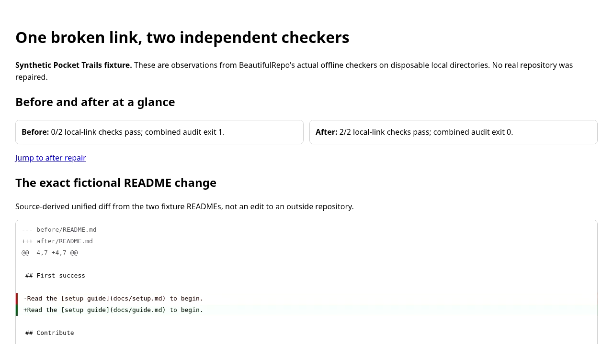

One broken README link, two checks
Fictional Pocket Trails demonstration. Actual Chromium capture of the local synthetic audit, not a recording of real users, a live repository repair or a WCAG audit. The video has no audio.
Enable descriptive captions in your browser's video controls. If file:// playback is blocked, serve these files over a loopback-only HTTP server. A complete text description is also available below.
Complete text alternative
- 00:00:00.000 --> 00:00:03.000 Pocket Trails (fictional): link checks improve 0/2 → 2/2.
- 00:00:03.000 --> 00:00:11.000 The README link changes: docs/setup.md → docs/guide.md.
- 00:00:11.000 --> 00:00:14.000 Before: broken links. After: both checks pass.
- 00:00:14.000 --> 00:00:19.000 The view returns to the before/after overview.
- 00:00:19.000 --> 00:00:23.520 Synthetic demo; no external repository was repaired.
Screenshot

Source-linked explanation: BeautifulRepo SHOWCASE.md. This external link is optional; local playback needs no network.